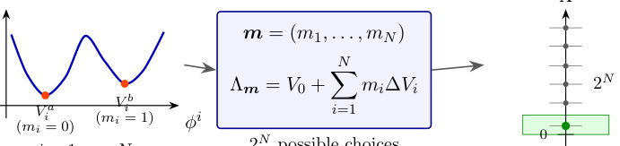

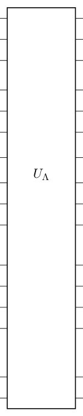
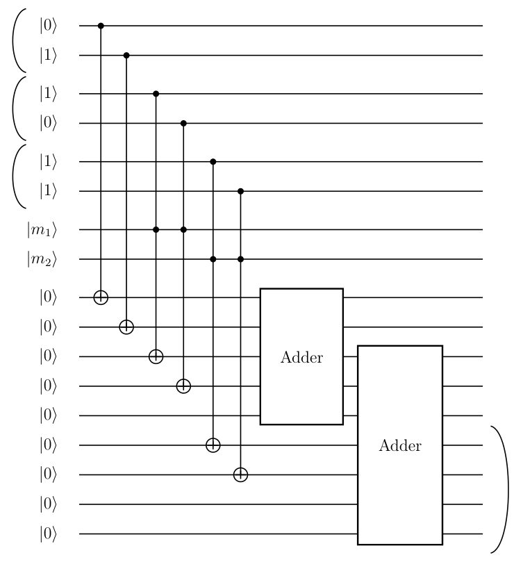
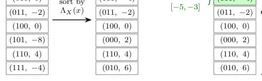
← Index · ← Previous · Next →
Authors: Abhisek Sahu
Type: theory · Category: other · PDF: https://arxiv.org/pdf/2610.07176v1
Analysis basis: full PDF text, analyzed in chunks
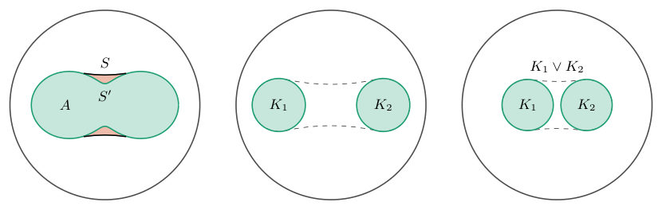
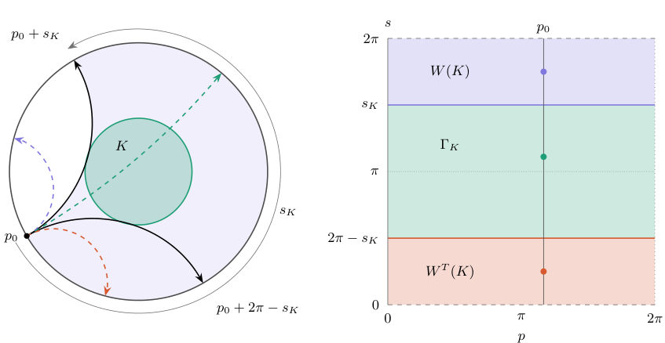
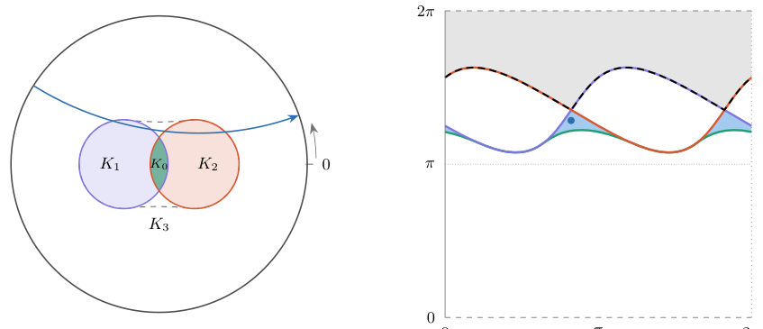
Summary. This theoretical paper explores the origin of entanglement properties in generalized entanglement wedges (GWs) within the context of AdS/CFT. By using integral geometry in AdS$_3$, the authors demonstrate that the strong subadditivity of GWs is mathematically guaranteed by the strong subadditivity of the boundary CFT entropy. This reinforces the idea that bulk geometric structures are dictated by the underlying quantum field theory.
Why it may be interesting. The connection between bulk geometric properties (GWs) and boundary quantum information properties (CFT entropy) is a cornerstone of modern quantum gravity, providing a concrete realization of the holographic principle.
Main problem. The paper investigates whether the fundamental properties of Generalized Entanglement Wedges (GWs) in general spacetimes, such as strong subadditivity, originate from the structure of the dual Conformal Field Theory (CFT) in the AdS/CFT correspondence.
Main result. In vacuum AdS$_3$, the strong subadditivity of GWs is shown to be a direct consequence of the strong subadditivity of the boundary CFT von Neumann entropy, suggesting a deep holographic link.
Method. The authors employ integral geometry, specifically the Crofton formula, to relate the perimeter of a bulk region to a measure on the space of geodesics, which is then connected to boundary entanglement entropies.
Model / system. The analysis is performed in vacuum Anti-de Sitter spacetime (AdS$_3$) on a static slice, utilizing the AdS/CFT correspondence where the bulk geometry is dual to a 2D CFT on the boundary.
Key observables. Generalized Entropy ($S_{ ext{gen}}$), von Neumann entropies of CFT intervals, and the perimeter of the geodesic convex regions.
Important parameters / regimes. Leading order in $G$ (Newton's constant), and the geometry of $ ext{AdS}_3$.
Assumptions / limitations. The analysis is restricted to vacuum $ ext{AdS}_3$ and assumes the validity of the Crofton formula and the AdS/CFT dictionary for the leading order terms.
Figures summary. Figures illustrate the characterization theorem, showing examples of regions that qualify as GWs based on convexity and perimeter relations, and relating bulk regions to the kinematic space $\Gamma$.
Paper structure. The paper first establishes the characterization theorem for GWs in $ ext{AdS}_3$, then uses integral geometry to relate bulk perimeters to boundary entropy measures, and finally proves the strong subadditivity of GWs by leveraging the known strong subadditivity of the boundary CFT entropy.
Generalized entanglement wedges (GWs), proposed by Bousso and Penington for gravitating regions in general spacetimes, share many properties of ordinary entanglement wedges, including nesting, monotonicity and strong subadditivity of their generalized entropies. In AdS/CFT, the corresponding properties of entanglement wedges are consequences of the structure of the dual CFT. In this paper we ask whether the properties of GWs have a similar origin. We explore this question in vacuum AdS$_3$ at leading order in $G$. We first show that every GW on a static slice is a union of geodesically convex regions. Each such region is an intersection of ordinary entanglement wedges, so every GW is built from unions and intersections of entanglement wedges. We then use the Crofton formula of integral geometry to write the perimeter of a convex region as the measure of the set of geodesics that intersect it. In AdS$_3$ every geodesic is the Ryu--Takayanagi surface of a boundary interval, so this measure can be written in terms of the von Neumann entropies of CFT intervals. Strong subadditivity of the CFT entropy guarantees that the measure is positive. Monotonicity and strong subadditivity of GWs then follow from simple inequalities between sets of geodesics. The strong subadditivity of GWs is therefore a direct consequence of strong subadditivity on the boundary. Our results further suggest that GWs correspond to subsystems of the CFT that are more general than boundary subregions.
Authors: Taiki Shiotani, Subaru Yoshimoto, Yoshikazu Tabata, Yusuke Nambu, Katsuki Kinjo, Kazuhiro Nawa, Taku J. Sato, Takeshi Waki, Hiroyuki Nakamura
Type: experiment · Category: strongly correlated electrons · PDF: https://arxiv.org/pdf/2610.08266v1
Analysis basis: full PDF text, analyzed in chunks
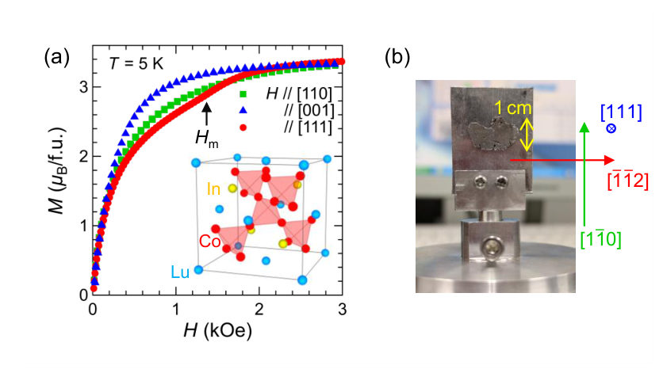
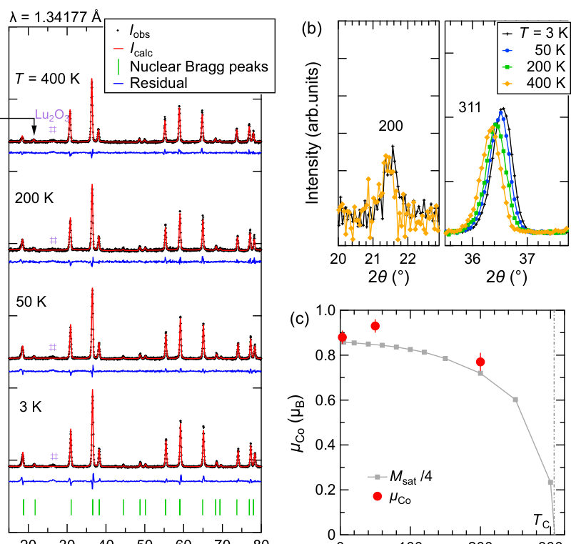
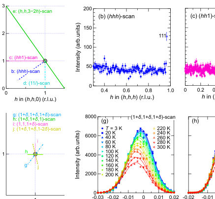
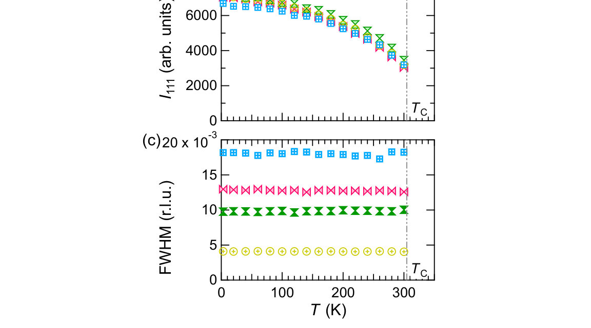
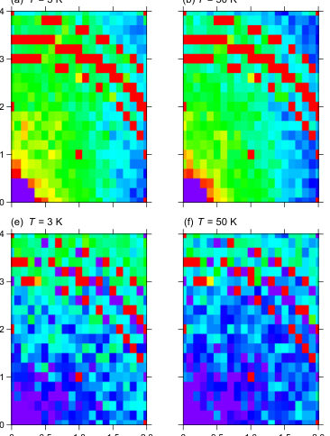
Summary. This work uses neutron diffraction on LuInCo4 to characterize its magnetic state, confirming a collinear ferromagnetism. Key findings include evidence for a gradual localization of Co-3d electrons upon cooling, which the authors propose enhances the residual ferromagnetic instability. This mechanism is suggested to explain the unusual, anisotropic metamagnetic transition observed at low temperatures.
Why it may be interesting. The concept of electron localization driving a magnetic transition is central to strongly correlated electron physics, providing a concrete experimental platform to test theories of itinerant magnetism beyond simple mean-field models.
Main problem. The study investigates the microscopic magnetic state and the origin of the low-temperature metamagnetic transition in the itinerant-electron ferromagnet LuInCo4.
Main result. The magnetic structure is confirmed to be a collinear ferromagnet, and the metamagnetic transition is proposed to arise from a ferromagnetic instability enhanced by the gradual localization of itinerant Co-3d electrons.
Method. The research employed powder and single-crystal neutron diffraction measurements, supplemented by analysis of diffuse magnetic scattering intensity evolution.
Model / system. The physical system is LuInCo4, a cobalt-based metallic pyrochlore compound exhibiting itinerant-electron ferromagnetism. The focus is on the interplay between electron localization and magnetic ordering in this lattice structure.
Key observables. Ordered Co magnetic moment ($\mu_{ ext{Co}}$), diffuse magnetic scattering intensity evolution, and the critical field ($H_m$) dependence on temperature and field direction.
Important parameters / regimes. The ordered moment is found to be around $0.9 \ \mu_{ ext{B}}$ at zero field, and the metamagnetic transition is observed below 100 K.
Assumptions / limitations. The analysis assumes that the observed diffuse scattering broadening is indicative of a gradual localization of the Co-3d electron character, which enhances the magnetic instability.
Figures summary. Figures show PND profiles confirming a $\mathbf{q}=0$ collinear ferromagnetism, while diffuse scattering maps illustrate the temperature-dependent broadening of intensity towards higher q-space regions.
Paper structure. The paper proceeds by first establishing the basic magnetic structure using zero-field neutron diffraction, then analyzing the temperature dependence of the magnetic moments and diffuse scattering to pinpoint the mechanism (electron localization), and finally connecting this mechanism to the anomalous metamagnetic transition.
We investigated the microscopic magnetic state of the itinerant-electron ferromagnet LuInCo4 with a cobalt pyrochlore lattice by means of powder and single-crystal neutron diffraction measurements. The powder neutron diffraction profiles at zero field are well described by a simple q = 0 collinear ferromagnetic structure with an ordered Co moment of 0.9 uB. Single-crystal neutron diffraction experiments further suggest the absence of both antiferromagnetic order and long-period helical magnetic modulation. In addition, diffuse magnetic scattering was observed around q = 0, with its intensity distribution gradually broadened in reciprocal space upon cooling. Based on these observations, we propose a possible microscopic origin of the low-temperature metamagnetic transition in terms of a ferromagnetic instability enhanced by gradual localization of the itinerant Co-3d electrons. These results suggest that LuInCo4 provides a model system for investigating the interplay between electron localization and itinerant-electron ferromagnetism in cobalt-based metallic pyrochlore compounds.
Authors: Hugo Tissot, Jonas Ranft, Yves Boubenec
Type: theory · Category: disordered systems and neural networks · PDF: https://arxiv.org/pdf/2610.08228v1
Analysis basis: full PDF text, analyzed in chunks
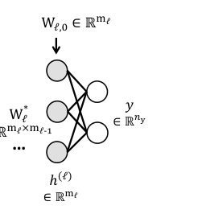
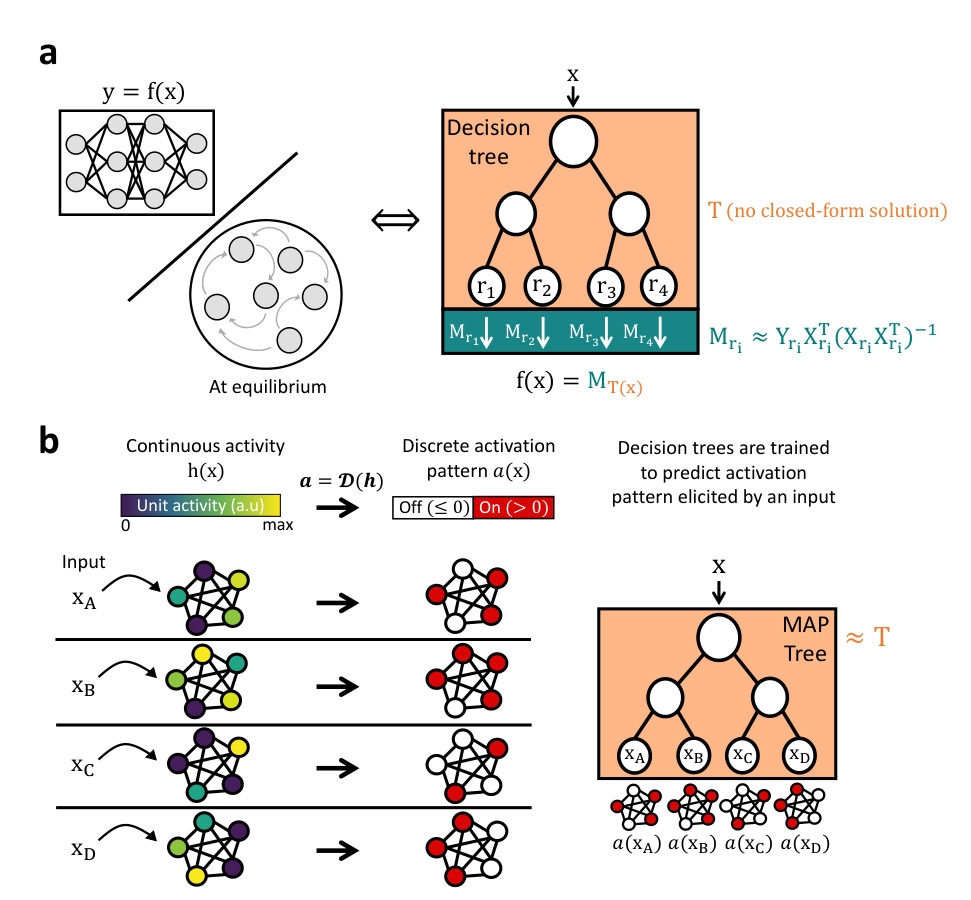
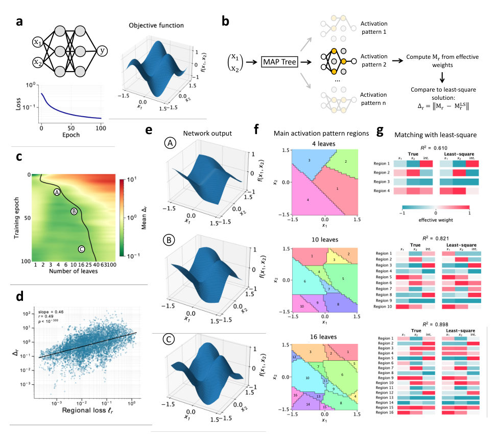
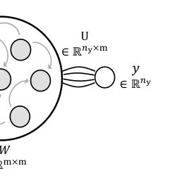
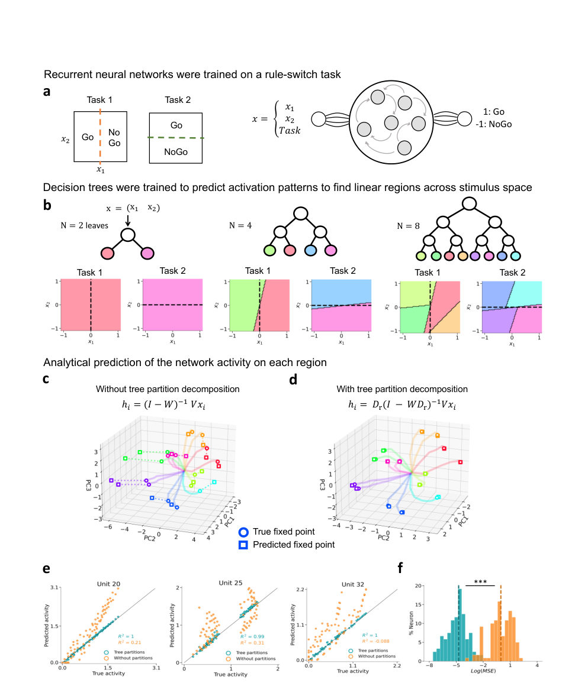
Summary. This paper provides an analytical framework showing that nonlinear neural networks effectively decompose the task they learn into a set of local, piecewise linear regressions defined over distinct activation regions. This structure is mathematically equivalent to a decision tree, suggesting that network selectivity is organized modularly based on these regions. The work establishes activation regions as a unifying concept for understanding network computation.
Why it may be interesting. The explicit mathematical link between optimization principles (least-squares) and the structural organization (decision trees) of high-dimensional representations is relevant for understanding how complex physical systems, including quantum information processing, might naturally organize their computational subspaces.
Main problem. The paper aims to understand how the geometry of internal representations in nonlinear neural networks is determined by the specific tasks they are learning.
Main result. The network's computation decomposes into a piecewise least-squares structure across distinct activation regions, which can be interpreted as a decision tree.
Method. An analytical framework is developed for gradient-aligned learning in piecewise-linear networks, deriving stationarity conditions based on regional gradient contributions.
Model / system. The model analyzed is a piecewise-linear feedforward and recurrent neural network, whose activity is partitioned into 'activation regions' ($S_r$) defined by the fixed pattern of active/inactive hidden units.
Key observables. Activation regions ($S_r$), regional deviation ($\Delta_r$), selectivity geometry ($\Sigma$), and the resulting decision-tree structure.
Important parameters / regimes. The per-region training loss ($\ell_r$) and the network's baseline activity level, which regulates representation diversity.
Assumptions / limitations. The analysis assumes the existence of a stationary point in gradient-aligned learning and that the regional input data ($X_r$) has full row rank for the least-squares decomposition.
Figures summary. Figures illustrate the decomposition into a tree structure (Fig. 2) and show that the network's implemented map converges toward the local least-squares solution as training error decreases (Fig. 3).
Paper structure. The paper proceeds by establishing the analytical framework for gradient decomposition, showing the resulting piecewise least-squares approximation, interpreting this structure as a decision tree, and finally validating the prediction of selectivity geometry using task statistics.
Nonlinear neural networks develop structured internal representations, yet how their geometry is determined by the tasks being learned remains poorly understood. Here, we develop an analytical framework for piecewise-linear feedforward and recurrent networks that links learning, activation-region structure, and neural selectivity. We show that, at any stationary point of gradient-aligned learning, a nonlinear network decomposes into local linear regressions over its activation regions. Deviations from the corresponding least-squares solutions are jointly constrained by network weights shared across regions and vanish in the low-error regime, yielding an approximate piecewise least-squares decomposition of the task. This structure admits a decision-tree interpretation, which we recover numerically by fitting trees to predict network activation patterns from the input. We further derive how the regions in which neurons are active determine the task statistics they capture, thereby organizing neural selectivity into distinct subpopulations. The resulting predictions closely match the selectivity geometry observed in simulated networks and two empirical neural datasets. Finally, we show that neural baseline regulates activation pattern diversity, placing networks along a continuum between coarse, generalizing representations and fine-grained, expressive representations. Together, these results establish activation regions as a unifying framework for describing how nonlinear networks decompose task structure into local computations and how those computations can be revealed through neural activity.
Authors: Mohammadreza Khellat, Mohammad Masoumi, Saman Nasoori, Soroush Nasoori
Type: theory · Category: quantum information and computing · PDF: https://arxiv.org/pdf/2610.08299v1
Analysis basis: full PDF text, analyzed in chunks
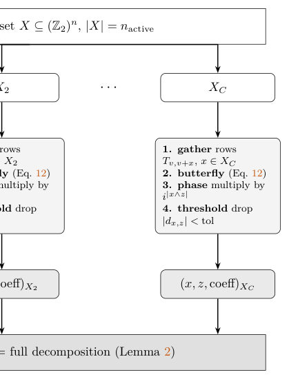
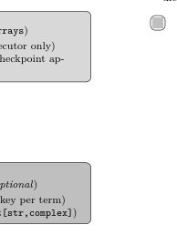
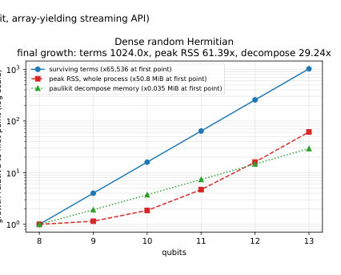
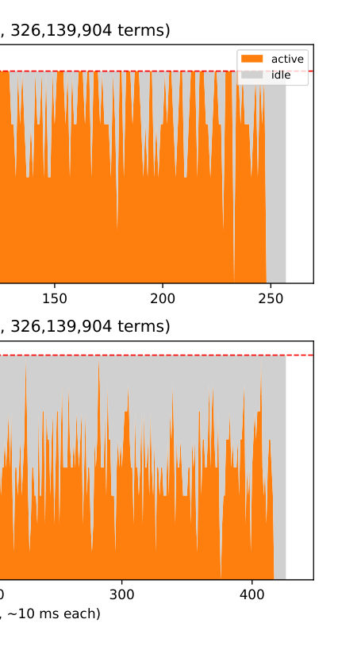
Summary. This paper presents a novel, memory-efficient algorithm for performing Pauli decomposition on quantum operators acting on qubits and qudits. By leveraging character theory and the Fast Walsh-Hadamard Transform, the authors achieve a fast computational scaling while crucially avoiding the memory bottleneck associated with storing the full exponential operator matrix. This advancement is vital for implementing large-scale quantum simulations and algorithms.
Why it may be interesting. This work provides a highly efficient, mathematically rigorous tool for analyzing quantum circuits and Hamiltonians, which is fundamental for simulating complex quantum dynamics in quantum information and computation.
Main problem. The paper addresses the challenge of efficiently decomposing a general quantum operator into the Pauli string basis, which is crucial for many quantum algorithms.
Main result. They developed a fast, memory-bounded algorithm using character theory (or DFT for qudits) to compute the Pauli coefficients, achieving a complexity of O(n 4^n) while avoiding the materialization of the full exponential-sized operator matrix.
Method. The core method involves applying Fourier analysis (specifically the Walsh-Hadamard transform for qubits) on an abelian shift-character lattice derived from the Pauli group structure.
Model / system. The theory applies to quantum computation involving n qubits (generalizable to qudits) and focuses on decomposing an arbitrary operator T acting on this system.
Key observables. The Pauli coefficients $d_{x,z}$ that define the decomposition $T = \sum d_{x,z} P(x, z)$.
Important parameters / regimes. The number of qubits/qudits ($n$), the dimension ($p$), and the computational complexity ($O(n 4^n)$).
Assumptions / limitations. The method assumes the structure of the Pauli group as a central extension and relies on the mathematical framework of character theory and DFT.
Figures summary. Figure 4 illustrates the performance benchmarking, showing active worker-thread count over time for different numbers of workers, comparing achieved speedup against theoretical limits.
Paper structure. The paper establishes the scientific problem (Pauli decomposition), develops the mathematical framework using character theory and DFT, presents the efficient algorithm for both qubits and qudits, and concludes with performance benchmarking and generalization discussions.
Pauli decomposition underpins Trotterization, phase estimation, sparse-Hamiltonian simulation, and variational observables, at exponential naive cost. From the character theory of $(\mathbb{Z}_2)^n$, characters $χ_z(v)=(-1)^{\langle v,z\rangle}$ are the diagonal Pauli strings, so any diagonal operator is already Pauli-decomposed. A general operator still needs the shifts: each $X^{\otimes x}$ couples to a character $χ_z=Z^{\otimes z}$, and the products $X^{\otimes x}Z^{\otimes z}$ -- up to phases in $\{\pm 1,\pm i\}$ -- form the Pauli group, the central extension of $(\mathbb{Z}_2)^n\times(\mathbb{Z}_2)^n$ by that phase group fixed by the symplectic pairing. A section of that extension remains a choice: the bare products $X^{\otimes x}Z^{\otimes z}$, or the genuine operators that insert $Y=iXZ$ at every qubit where $x$ and $z$ overlap. As Fourier analysis on an abelian shift-character lattice (a natural DFT), this formulation is not qubit-bound: $(\mathbb{Z}_p)^n$ recovers Heisenberg-Weyl qudits. The fast algorithm is the FFT for the group at hand; on $(\mathbb{Z}_2)^n$ that FFT is Walsh-Hadamard, at cost $O(n\cdot 4^n)$. paulikit is a memory-bounded realization of that qubit transform: peak usage need not materialize the dense $2^n\times 2^n$ operator, unlike prior codes whose $O(1)$ extra sits on that buffer, checked beyond a billion oscillator terms against Work-Span and bandwidth ceilings.
Authors: Ryder Carlson, Lochlan Fitzgerald, Kidus Peter, Wilson Smith
Type: theory · Category: quantum information and computing · PDF: https://arxiv.org/pdf/2610.07251v1
Analysis basis: full PDF text, analyzed in chunks
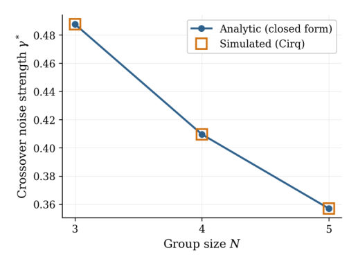
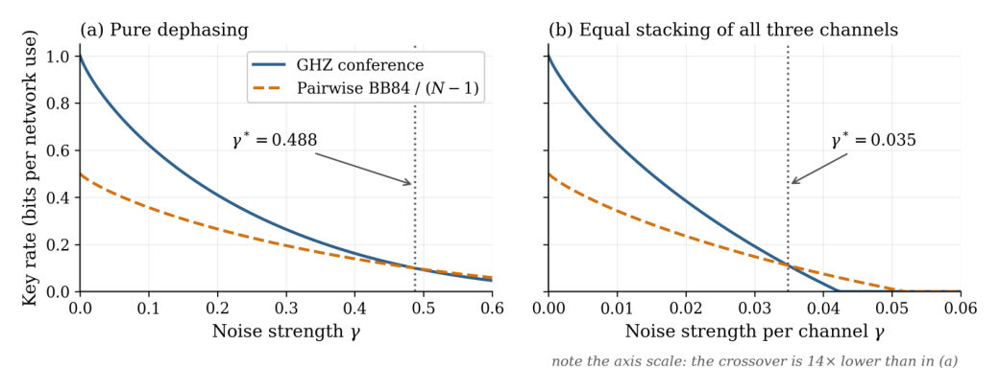
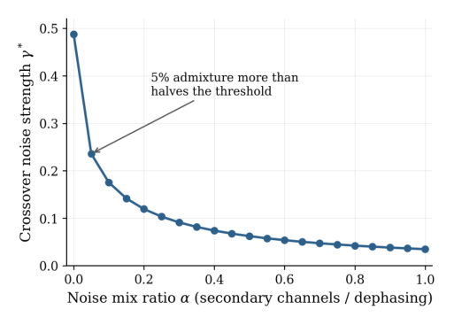
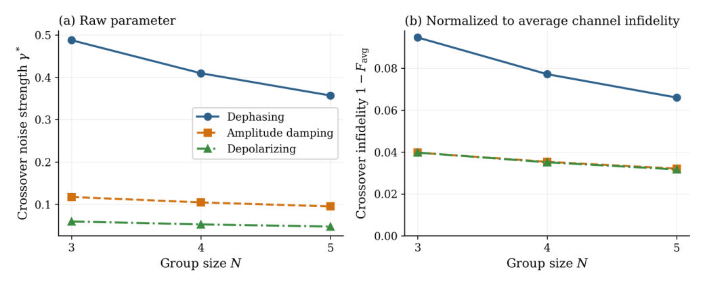
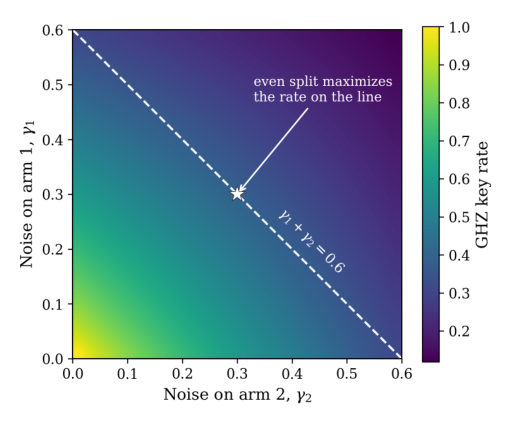
Summary. This work analyzes the robustness of GHZ-based quantum key distribution against noise, showing the advantage over pairwise methods depends on the underlying Pauli error structure of the noise, not just its strength. Key findings include that noise should be spread evenly across all parties and that the dealer should be the party with the least noisy link. The study provides crucial theoretical bounds but notes that transmission loss remains the most significant physical omission.
Why it may be interesting. The finding that the advantage depends on the Pauli error composition rather than the channel type provides a powerful, general structural test for quantum communication protocols, applicable across different physical noise sources.
Main problem. The paper investigates the conditions under which the multipartite advantage of GHZ-based conference key agreement over pairwise BB84 persists when subjected to various types of quantum noise.
Main result. The key advantage is determined by the channel's Pauli error composition, not its specific identity, and the rate is maximized by distributing noise evenly or assigning the dealer role to the cleanest party.
Method. The authors simulate both protocols exactly for small $N$ under different noise channels and derive closed-form rate expressions for arbitrary Pauli noise.
Model / system. The model uses quantum key distribution (QKD) protocols, specifically comparing GHZ-based conference key agreement against pairwise BB84 in a star network topology.
Key observables. Asymptotic conference key rates ($r_{GHZ}$) and pairwise key rates, measured via error rates like $Q_x$ (collective X error) and $Q_{1,i}$ (pairwise Z error).
Important parameters / regimes. Number of parties ($N=3, 4, 5$), noise types (Dephasing, Depolarizing, Amplitude Damping), and the distribution of a fixed total noise budget.
Assumptions / limitations. The analysis assumes independent single-qubit channels on each arm and explicitly omits transmission loss, detector efficiency, and finite-key corrections.
Figures summary. Figure 1 illustrates the preparation and distribution of an N-qubit GHZ state, while tables compare key rates under different noise distribution strategies.
Paper structure. The paper establishes the theoretical framework by deriving closed-form rates for Pauli noise, compares the GHZ vs. pairwise protocols, analyzes the dependence on noise distribution (even vs. concentrated), and derives structural corollaries regarding the dealer role.
GHZ-based conference key agreement distributes a shared key to $N$ parties in one network use, whereas pairwise BB84 needs $N-1$. The survival of that advantage has been studied against party number, loss, and topology, but almost always with the channel fixed at depolarizing. Simulating both protocols exactly for $N = 3, 4, 5$ under dephasing, amplitude damping, and depolarizing noise, we find the crossover is set by the channel's Pauli error composition, not its identity: normalized to average infidelity, amplitude damping and depolarizing agree to within about 1\% at each group size, while dephasing can tolerate roughly $2.4\times$ more at $N = 3$. We derive a closed-form rate for arbitrary per-party Pauli noise and use it to prove that concentrating a fixed noise budget on one arm is strictly worse than spreading it, and that giving the dealer role to the cleanest arm improves the rate by roughly 18\%. One structural fact drives every result: the phase-error term is a product over all $N$ arms, while the bit-error term stays local to a pair.
Authors: Paweł Cieśliński
Type: theory · Category: quantum information and computing · PDF: https://arxiv.org/pdf/2610.07172v1
Analysis basis: full PDF text, analyzed in chunks
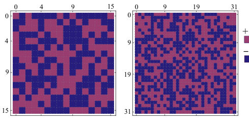
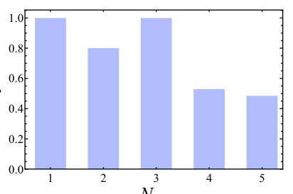
Summary. This theoretical paper explores Pauli flat quantum states, which are defined by having equal absolute expectation values across all Pauli operators. The authors demonstrate that these mixed states can mimic the correlation structure of highly magical pure states, providing a new mathematical lens to understand the necessary resources for fault-tolerant quantum computing.
Why it may be interesting. The connection drawn between Pauli correlation structures (a mathematical tool) and the resource concept of quantum magic is highly relevant for understanding the boundaries of quantum computation and entanglement detection in many-body quantum systems.
Main problem. The paper investigates the correlation structure of quantum states that maximize quantum magic, focusing on the concept of Pauli flat states.
Main result. Mixed Pauli flat states can be constructed for arbitrary number of qubits and have been shown to reproduce the correlation structure of highly magical pure states, suggesting a link between mixed states and quantum resource theory.
Method. The authors analyze Pauli expectation values using a witness approach and employ mathematical constructions (including SDP optimization) to determine the existence and properties of these specialized quantum states.
Model / system. The system under study is an N-qubit quantum state, $ ho$, analyzed through its expectation values on all Pauli strings. The core focus is on defining and characterizing 'Pauli flat states' based on these expectation values.
Key observables. Pauli expectation values ($ ext{Tr}[ ho P_i]$), the non-stabiliserness witness value ($ ext{Tr}( ho W)$), and the parameter $\gamma$ defining the state structure.
Important parameters / regimes. The number of qubits ($N$), the constant absolute value of Pauli expectations ($\gamma$), and the threshold value $2N-1$ for detecting magic.
Assumptions / limitations. The analysis relies on defining Pauli flat states by equal absolute Pauli expectations and uses the non-stabiliserness witness to prove the presence of quantum magic.
Figures summary. The notes mention figures illustrating sign vectors for $N=4$ and $N=5$, and a table summarizing the best-found values of $\gamma$, Purity, and the non-stabiliserness ratio ($\eta_S$) for small $N$.
Paper structure. The paper progresses from defining quantum magic and Pauli flat states, analyzing pure state limitations (especially for $N=2$), developing the mixed state framework, proving existence theorems for mixed states, and concluding with explicit, highly technical derivations of the density matrix elements for $N=4$ and $N=5$.
Quantum magic is a necessary resource for fault-tolerant quantum computing, capturing the departure of quantum states from the classically simulable stabiliser set. Motivated by its role in quantum information processing, we investigate the correlation structure of states that maximize the Rényi stabiliser entropies, focusing on the T-type and Hoggar states. Inspired by their distinctive properties, we explore the notion of Pauli flat states, defined as N-qubit states whose expectation values on all Pauli strings are equal in absolute value. These states reproduce the correlation structure of highly magical states, which could also be interpreted as a mixed variant of Pauli covariant N-qubit symmetric informationally complete (SIC) Weyl-Heisenberg fiducial states, while not necessarily possessing nontrivial quantum magic. We investigate their existence and possible constructions, including examples both inside and outside of the stabiliser polytope. To identify the latter, we examine a magic witness tailored to the introduced family of states. Finally, we discuss their entanglement and Bell nonlocality, providing a broader characterization of their quantum properties. For completeness, we find pure states with a relaxed condition on the Pauli expectations, which forces unequal elements to zero, and discuss their non-stabiliserness. Our results offer a new perspective on the relation between quantum magic and Pauli correlation structures. They hold relevance to geometrical approaches to quantum mechanics, entanglement and magic detection, as well as estimation tasks.
Authors: Shirabe Endo, Yuta Hamada
Type: theory · Category: quantum information and computing · PDF: https://arxiv.org/pdf/2610.07439v1
Analysis basis: full PDF text, analyzed in chunks




Summary. This paper develops quantum algorithms to efficiently search the vast space of possible vacuum states in the ADK string theory landscape. By reformulating the search as a collision problem, the authors improve the query complexity from $O(2^{N/2})$ to $O(2^{N/3})$. This demonstrates a quantum advantage over classical methods for finding low-energy vacua.
Why it may be interesting. While the physical context is high-energy theory, the core contribution is a rigorous quantum complexity analysis, directly relevant to quantum algorithms for solving hard search problems.
Main problem. The paper addresses the computational challenge of finding a vacuum state with a small cosmological constant within the complex ADK Landscape of string theory.
Main result. The authors propose quantum algorithms that achieve a query complexity of $O(2^{N/3})$, significantly improving upon classical meet-in-the-middle approaches ($O^*(2^{N/2})$) for physically relevant parameters.
Method. The problem is reformulated as a collision problem, allowing the application of quantum search techniques like the sorted-list algorithm and quantum walks.
Model / system. The system is the toy model for the string Landscape (ADK model), where the vacuum energy $\Lambda_m$ is a linear combination of terms determined by $N$ binary choices ($m \in \{0, 1\}^N$).
Key observables. The vacuum energy $\Lambda_m$, and the target window defined by $0 \le \Lambda_m \le \Lambda_{ ext{target}}$.
Important parameters / regimes. The number of scalar fields ($N$), and the ratio $\Lambda_{ ext{target}}/M^4_{ ext{Pl}}$ (e.g., $10^{-120}$).
Assumptions / limitations. The quantum algorithms assume access to Quantum-Accessible Classical Memory (QRACM) and rely on the linearity of the vacuum energy to reduce the search to a collision problem.
Figures summary. Figures illustrate the ADK landscape, the state register for the oracle, and the process of the meet-in-the-middle search, comparing complexities for different algorithms.
Paper structure. The paper first establishes the physical problem (ADK Landscape search), derives the oracle complexity, compares plain Grover search ($O(2^{N/2})$) to classical methods, and finally develops and analyzes two quantum algorithms achieving $O(2^{N/3})$ complexity.
We study quantum algorithms for finding a vacuum with a small cosmological constant in the toy model for string Landscape proposed by Arkani-Hamed, Dimopoulos, and Kachru. First, we construct a function-value oracle and use it for Grover search with query complexity $\mathcal{O}(2^{N/2})$, where $N$ is the number of scalar fields. Then, we point out that, by exploiting the linearity of the vacuum energy, the problem can be reduced to a collision problem between two blocks of the bit string. With this structure, we construct two quantum algorithms with query complexity $\mathcal{O}(2^{N/3})$. Compared with the pseudo-polynomial classical algorithm of Denef and Douglas, the quantum algorithms yield a large reduction in computational cost for the physically motivated parameter values.
Authors: Zheyu Shen, Yusen Wu, Xiao Yuan, Xiao-Ming Zhang, Yukun Zhang
Type: theory · Category: quantum information and computing · PDF: https://arxiv.org/pdf/2610.08714v1
Analysis basis: full PDF text, analyzed in chunks
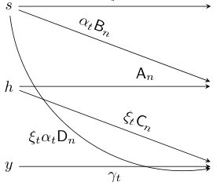
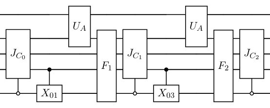
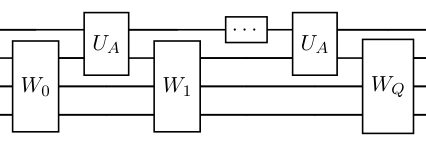
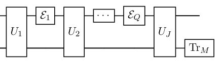
Summary. This paper establishes a comprehensive theory for synthesizing quantum circuits implementing multivariable polynomial transformations on noncommuting matrices. It achieves optimal query complexity bounds and extends the methodology to synthesize complex quantum channel transformations. This work positions multivariable approximation as a fundamental language for designing higher-order quantum information processing protocols.
Why it may be interesting. It provides a rigorous mathematical framework for designing complex quantum circuits by treating multi-variable polynomial operations as a structured, synthesizable resource, which is crucial for advanced quantum algorithm design.
Main problem. Developing a complete constructive theory for synthesizing multivariable polynomial transformations of noncommuting matrices, and extending this framework to quantum channel transformations.
Main result. The authors provide a synthesis procedure achieving optimal query complexity for these transformations and show how this framework can synthesize any jointly contractive family of noncommutative polynomial maps as completely positive quantum operations.
Method. The core method involves developing a finite algorithmic Schur–Agler theorem to derive a semidefinite certificate for contractivity, which then dictates the structure of the required quantum query circuit.
Model / system. The work focuses on quantum algorithms utilizing polynomial transformations applied to noncommuting matrices and generalized to quantum channels described by Kraus operators and Choi data.
Key observables. Query complexity ($O(D/\sqrt{ au})$ or $D$), contractivity certificate, and the resulting quantum channel operations.
Important parameters / regimes. Degree $D$, contraction parameter $ au$, and the number of joint accesses.
Assumptions / limitations. The synthesis relies on a compact finite-state description of the polynomial and the existence of a joint block access model.
Figures summary. The notes mention figures illustrating the interleaved structure of the complete quantum circuit and the definition of the Gram matrices used in the fixed-query criterion.
Paper structure. The paper progresses from establishing the lack of a synthesis theory for multivariable transformations to developing the constructive theory using the Schur–Agler theorem, and finally applying this theory to synthesize quantum channel transformations.
Polynomial transformations are basic primitives in quantum algorithms: quantum signal processing and singular value transformation compile univariate polynomials into circuits with query complexity essentially set by degree. Multivariable transformations of noncommuting matrices, however, lack a comparable synthesis theory. We develop a complete constructive theory under joint block access for all polynomials contractive on the prescribed matrix domain. Given a compact finite-state description of a degree-$D$ polynomial $P$ and $0<τ<1$, we synthesize $P$ with $(1+τ)$-optimal normalization using $O(D/\sqrtτ)$ queries, and exactly $D$ under row-block access, matching a degree lower bound. The complete circuit realization is classically computable in polynomial time with polylogarithmic dependence on accuracy. The key to our construction is a finite algorithmic Schur--Agler theorem: the coefficient recurrence defines a polynomial-dimensional continuation space supporting a complete semidefinite certificate for contractivity on the prescribed domain. Factoring this certificate yields the contractive realization underlying the query algorithm. Beyond matrix transformations, our framework lifts multivariable polynomial synthesis to quantum channel transformations. Given coherent Kraus access $K=\{K_a\}_a$, we synthesize any finite jointly contractive family of noncommutative polynomial maps $K\mapsto\{F_b(K)\}_b$ as completely positive operations, allowing coherent interference among Kraus histories. Furthermore, channel-level transformations specified by causal Choi data can be synthesized explicitly as fixed-order quantum combs. Collectively, these results point to a broader program: multivariable approximation as a language for multi-operator quantum algorithms and higher-order quantum information processing.
Authors: Han Ma
Type: theory · Category: disordered systems and neural networks · PDF: https://arxiv.org/pdf/2610.08503v1
Analysis basis: full PDF text, analyzed in chunks
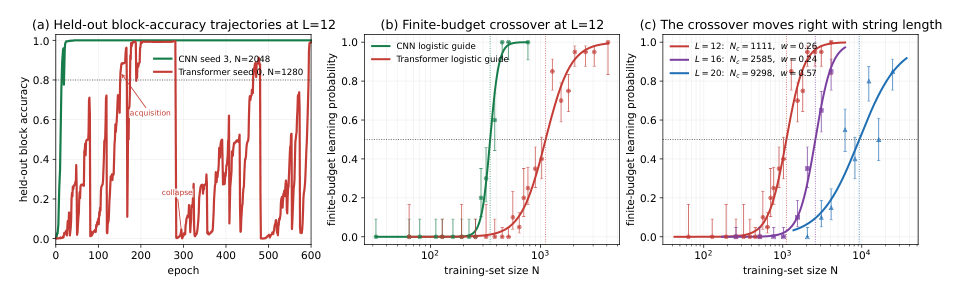
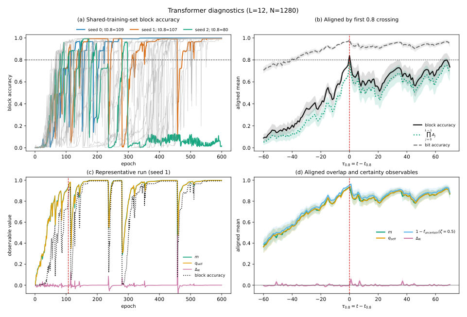
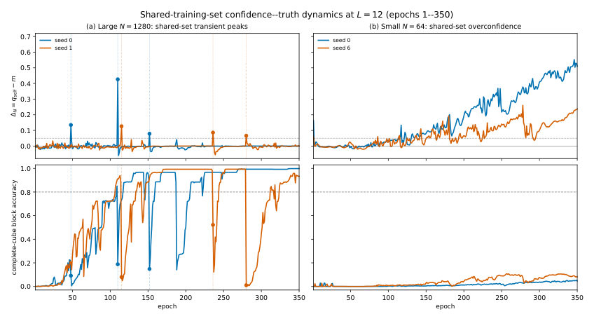

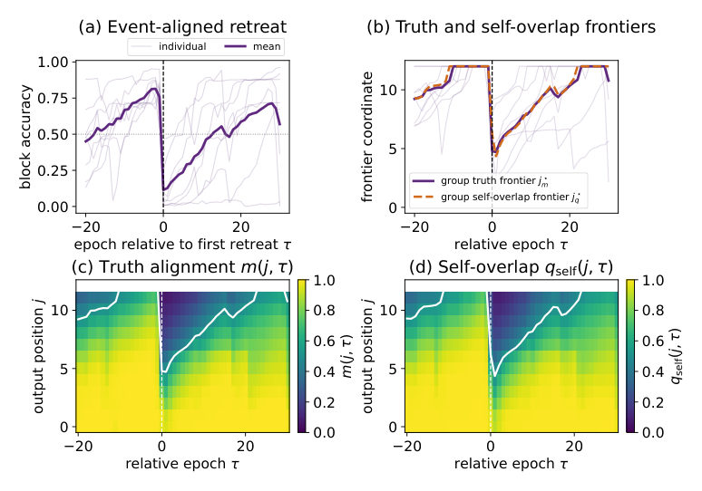
Summary. This work applies concepts from spin-glass theory to analyze how independently trained neural networks learn complex functions, specifically binary string reconstruction. By measuring replica overlaps and defining gaps, the authors distinguish between distinct learning states like 'memorization' and 'retreat.' This provides a theoretical understanding of generalization failure in deep learning models using tools from condensed matter physics.
Why it may be interesting. The application of spin-glass concepts (replica overlaps, glassy dynamics) to the generalization failure of deep learning models provides a powerful theoretical framework for understanding complex, non-equilibrium learning processes.
Main problem. The paper investigates the dynamics of independently trained Transformer neural networks reconstructing a binary string from local domain walls, characterizing the resulting ensemble of learned functions.
Main result. The self–cross gap ($\chi_{SG}$) successfully distinguishes three distinct learning regimes: memorization, retreat, and recovery, revealing differences in residual correlations between these states.
Method. The analysis uses statistical physics tools, calculating overlaps ($m, q_{ ext{self}}, q_{ ext{cross}}$) and gaps ($\chi_{SG}$) across different learning protocols and data sizes.
Model / system. The model is a Transformer network trained on a binary string reconstruction task defined by parity constraints, treated as an ensemble of 'replicas' whose behavior is analyzed using concepts from spin-glass theory.
Key observables. Truth alignment ($m$), self-confidence ($q_{ ext{self}}$), cross-replica agreement ($q_{ ext{cross}}$), and the self–cross gap ($\chi_{SG}$).
Important parameters / regimes. Training set size (small vs. large), string length ($L$), and the resulting learning regimes (memorization, retreat, recovery).
Assumptions / limitations. The observed regimes are noted to be 'operational and finite-size rather than thermodynamic phases.'
Figures summary. Figures illustrate trajectories of block accuracy for CNN vs. Transformer, the crossover of learning probability with data size, and position-resolved residual gaps showing failure peaks.
Paper structure. The paper progresses by defining the physical system and observables, establishing the three learning regimes using overlaps, and then providing detailed diagnostics (residual correlations, position-resolved gaps) to distinguish between memorization and retreat dynamics.
We study how independently trained Transformer neural networks reconstruct a binary string from its local domain walls. Runs sharing the data and training protocol can realize different functions. We treat them as replicas and measure truth alignment $m$, prediction confidence $q_{\mathrm{self}}$, and cross-replica agreement $q_{\mathrm{cross}}$. Confident disagreement defines the finite-size replica fragmentation that we call glass-like. With small training sets, replicas predict all training examples correctly but remain confident in incorrect predictions for unseen inputs, a regime we call memorization. With larger sets, runs can generalize and then retreat. Retreat occurs when outputs start to deviate from truth while confidence remains high. The frontier between learned and unlearned outputs recedes toward shorter strings. Many later recover as the frontier advances again. The self--cross gap $q_{\mathrm{self}}-q_{\mathrm{cross}}$ clearly distinguishes the three learning regimes of memorization, retreat, and recovery. With overall and position-dependent truth alignment subtracted, their residual correlations also differ: memorizing replicas have weakly and uniformly correlated residuals, while retreat has the largest fraction of replica pairs whose residuals are anti-correlated. That is, on the inputs where one replica of such a pair does better than its average, the other tends to do worse. These finite-size observations distinguish persistent memorization from ongoing retreat--recovery dynamics. The thermodynamic and long-time limits, and extensions to other learning tasks, remain open.
Authors: Beilei Jiang, Harry Fu, Pavan Krishna Yarlagadda, Alexander Shan, Yunhe Feng, Song Fu
Type: theory · Category: quantum information and computing · PDF: https://arxiv.org/pdf/2610.07252v1
Analysis basis: full PDF text, analyzed in chunks
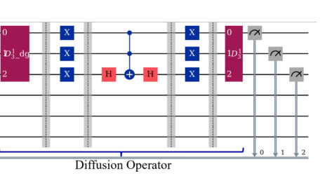
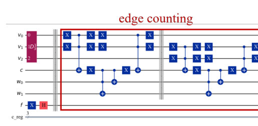
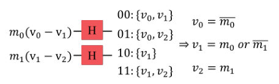
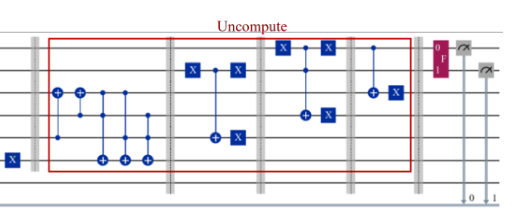
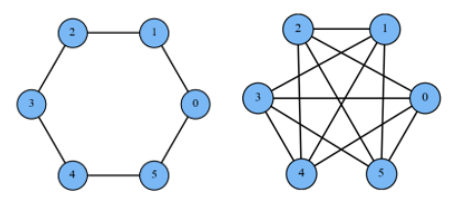
Summary. This paper tackles the resource limitations of using Grover's algorithm to solve the NP-hard Minimum Vertex Cover problem. The authors introduce three advanced quantum encoding strategies—Dicke-Parallel, Edge-Counting, and Edge-Centric—to minimize qubit count and circuit depth. By analyzing trade-offs based on graph density, they provide practical guidance for selecting the most hardware-efficient quantum algorithm for this optimization task.
Why it may be interesting. While focused on graph theory, the resource analysis provides deep insights into optimizing quantum circuit structure (oracle design) to manage qubit and gate overhead, which is relevant for any complex quantum simulation.
Main problem. The paper addresses the Minimum Vertex Cover (MVC) problem, a fundamental NP-hard combinatorial optimization problem.
Main result. The authors propose and analyze three resource-aware Grover-based formulations (Dicke-Parallel, Edge-Counting, Edge-Centric) that offer trade-offs in qubit count, circuit depth, and gate complexity depending on the graph structure.
Method. They develop and compare novel quantum encoding and oracle-design strategies to minimize the quantum resource overhead associated with running Grover's algorithm for MVC.
Model / system. The model is the quantum computation framework utilizing Grover's algorithm to search the solution space of the MVC problem on a given graph structure.
Key observables. Qubit count, circuit depth, gate complexity, and Grover iteration count.
Important parameters / regimes. Graph density (relationship between edges $m$ and vertices $n$), and the required fixed cardinality $k$ for the vertex cover.
Assumptions / limitations. The resource cost is not solely determined by search space size; the internal organization of the oracle, especially cardinality enforcement, is a major bottleneck.
Figures summary. Figure 1 shows the quantum circuit diagram for the Dicke-Parallel Grover search; Figure 11 summarizes resource results across various graph density levels for the different formulations.
Paper structure. The paper first establishes the resource overhead of standard Grover MVC formulations, then introduces and analyzes three novel designs (Dicke-Parallel, Edge-Counting, Edge-Centric) by comparing their resource costs across different graph densities.
The Minimum Vertex Cover (MVC) problem is a fundamental NP-hard combinatorial optimization problem with applications in network analysis and resource allocation. Grover's algorithm provides a quadratic reduction in query complexity for unstructured search, but existing Grover-based MVC formulations can incur substantial quantum resource overhead due to costly vertex-counting circuits and complex oracle constructions. We develop and evaluate several encoding and oracle-design strategies for reducing the qubit count, circuit depth, and gate complexity of Grover-based MVC search. First, we construct a Dicke-Parallel formulation that restricts the search to fixed-cardinality subsets, eliminating explicit vertex counting, together with a parallel edge-verification oracle that reduces feasibility-checking overhead. We then develop an Edge-Counting formulation that replaces per-edge auxiliary storage with a logarithmic-size counting register, substantially reducing ancillary-qubit requirements. Finally, we propose an Edge-Centric encoding that represents endpoint selections directly and derives vertex-selection states through incident-edge Boolean operations, enabling more depth-efficient oracle construction. Our resource analysis reveals complementary trade-offs among qubit width, circuit depth, gate count, and Grover iteration count. Edge-Counting is particularly attractive under tight qubit constraints, while Edge-Centric can reduce both circuit depth and Grover iteration count when the graph has a moderate edge count and sufficient representation multiplicity. Dicke-Parallel provides a more robust choice when such multiplicity is limited or graph density makes the edge-based search space large. These results provide practical guidance for selecting Grover-based MVC formulations according to hardware constraints and graph structure.
Authors: Sharoz Schezwen, Yijie Shen
Type: theory · Category: other · PDF: https://arxiv.org/pdf/2610.08391v1
Analysis basis: full PDF text, analyzed in chunks
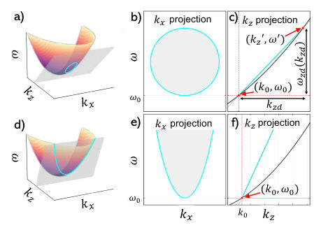
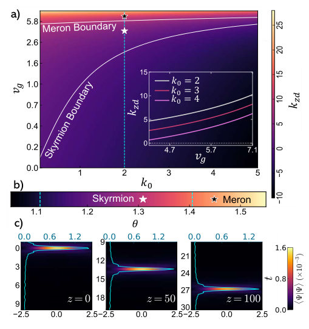
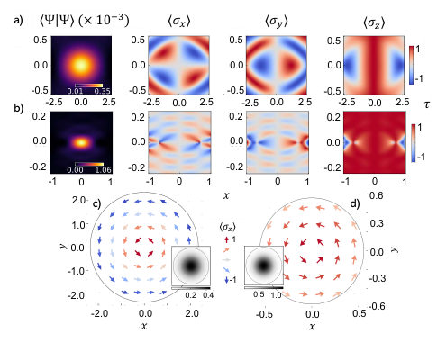
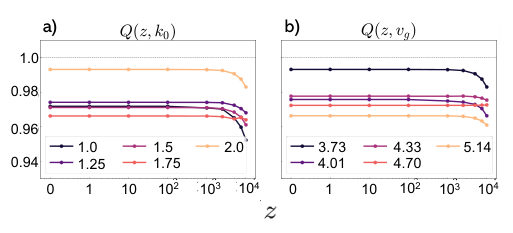
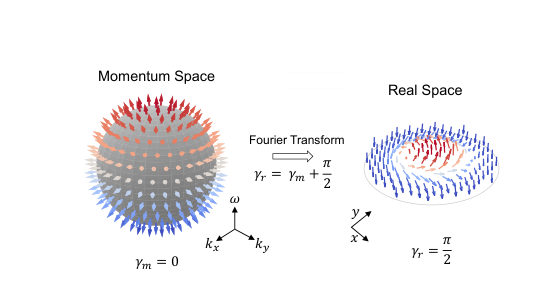
Summary. This paper explores free-electron Space-Time Wave Packets (STWPs) capable of carrying tunable topological textures, specifically Skyrmions and Merons. By constraining the momentum-space spectrum, the authors show how to create propagation-invariant wave packets. This work establishes a novel platform for using electron wave packets in topological sensing and information transfer.
Why it may be interesting. This work bridges concepts from quantum optics (tunable wave packets) with condensed matter topology (Skyrmions) using matter waves (electrons), providing a platform for topological information transfer.
Main problem. The paper investigates the properties of Space-Time Wave Packets (STWPs) for free electrons, focusing on their ability to carry and maintain tunable topological textures like Skyrmions and Merons.
Main result. The authors demonstrate that free-electron STWPs can be constructed to be propagation-invariant and host robust, real-space Skyrmionic expectation value textures by tuning the spectral geometry.
Method. The study involves constraining the spatiotemporal spectrum of the electron wavefunction in momentum space and analyzing the resulting topology using spectral geometry.
Model / system. The system is modeled using non-relativistic free-electron wave packets, analyzed in both momentum and real space. The topological structure is encoded in the local spin expectation value (SEV) of the electron spinor.
Key observables. Skyrmion number (Q), local spin expectation value (SEV), and the propagation invariance of the topological texture.
Important parameters / regimes. Group velocity ($v_g$), carrier wavenumber ($k_0$), and the spectral tilt angle ($ heta$).
Assumptions / limitations. The analysis is restricted to non-relativistic free-electrons, and the initial construction is noted to be a scalar construction lacking vector structure.
Figures summary. Figures illustrate the construction of momentum space Skyrmions via closed spectral loops, the allowed parameter space for hosting Skyrmions/Merons, and the resulting robust real-space SEV textures.
Paper structure. The paper methodically constructs the STWP in momentum space, analyzes the topological constraints (Skyrmion vs. Meron), and then demonstrates the physical realization and robustness of these topological textures in real space.
Space-Time Wave Packets (STWPs) have enabled numerous nontrivial properties, such as tunable group velocities, nondiffraction and nonlocal spin textures in optical fields. However, this has not been properly studied in matter waves. Here, we investigate free-electron STWPs, which are propagation-invariant and group-velocity-tunable matter wave packets, constructed by constraining the spatiotemporal spectrum of the electron wavefunction in momentum space. Due to the unique dispersion of free-electrons, the electron STWP can carry two different topologies, and host both meron and skyrmion topological textures in momentum space. We demonstrate the topological phase transitions and tunable skyrmion numbers by spectral geometry tuning. We also show the topologically robust propagation of the electron pulses and corresponding real-space skyrmionic expectation value textures encoded within each single electron wavefunction. Our results open a platform for topological free-electron wavepackets uses in sensing and information transfer.
Authors: Jingsong Ao, Julio I. de Vicente, Alexander Streltsov
Type: theory · Category: quantum information and computing · PDF: https://arxiv.org/pdf/2610.08062v1
Analysis basis: full PDF text, analyzed in chunks
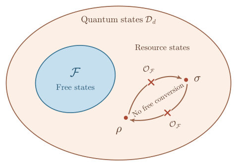
Summary. This theoretical paper proves that quantum resource theories in dimensions three or higher cannot be totally ordered, meaning there will always exist pairs of quantum states that cannot be ranked relative to each other. This impossibility is a unique feature of quantum mechanics, as classical systems of any size can always be perfectly ranked. The result establishes a rigorous mathematical divide between quantum and classical state transformation capabilities.
Why it may be interesting. This work provides a fundamental mathematical constraint on the structure of quantum resources, establishing a clear boundary between quantum and classical physics in the context of state transformation theory.
Main problem. The paper investigates whether quantum resource theories can be characterized by a single, total ordering of states, which would simplify the understanding of state convertibility.
Main result. It proves that for quantum systems of dimension $d \geq 3$, such a total ordering is fundamentally impossible due to the existence of incomparable states. This property is shown to be a purely quantum phenomenon.
Method. The authors use structural proofs by contradiction, analyzing the properties of resource monotones and leveraging convexity arguments on the state space to demonstrate the existence of incomparable states.
Model / system. The study concerns quantum resource theories defined over the space of density operators ($\mathcal{D}_d$) on a $d$-dimensional quantum system. The analysis contrasts these quantum systems with classical systems.
Key observables. Resource monotone ($M$), the existence of incomparable states ($ ho, \sigma$), and the dimension ($d$) of the system.
Important parameters / regimes. The dimension $d$ (specifically $d \geq 3$), and the structure of the free set ($F$) and allowed operations ($\mathcal{O}_F$).
Assumptions / limitations. The resource theory is non-trivial, and the analysis focuses on deterministic, unassisted state transformations.
Figures summary. Figure 1 schematically illustrates the concept of quantum incomparability within the state space.
Paper structure. The paper establishes the goal of total ordering, proves the impossibility for $d \geq 3$ quantum systems (Theorem 1), and contrasts this impossibility with the fact that classical resource theories can be totally ordered in any finite dimension.
A central goal in quantum information science is understanding which physical states can be converted into others. The ideal scenario would be a totally ordered system, where every state can be ranked by a single value, and a higher-ranked state can always be converted into a lower-ranked one. Such an ordering would provide a complete description of state convertibility, making the resource structure maximally simple to characterize and compare. We prove that such a simple ordering is fundamentally impossible for any quantum system with dimension larger than 2. The underlying properties of quantum mechanics guarantee that some states will always be incomparable. Furthermore, we show this is a uniquely quantum phenomenon by constructing classical systems of any size that can be perfectly ranked. This establishes a rigorous and striking divide between quantum and classical state transformations.
Authors: Yu Wang
Type: theory · Category: quantum information and computing · PDF: https://arxiv.org/pdf/2610.07697v1
Analysis basis: full PDF text, analyzed in chunks
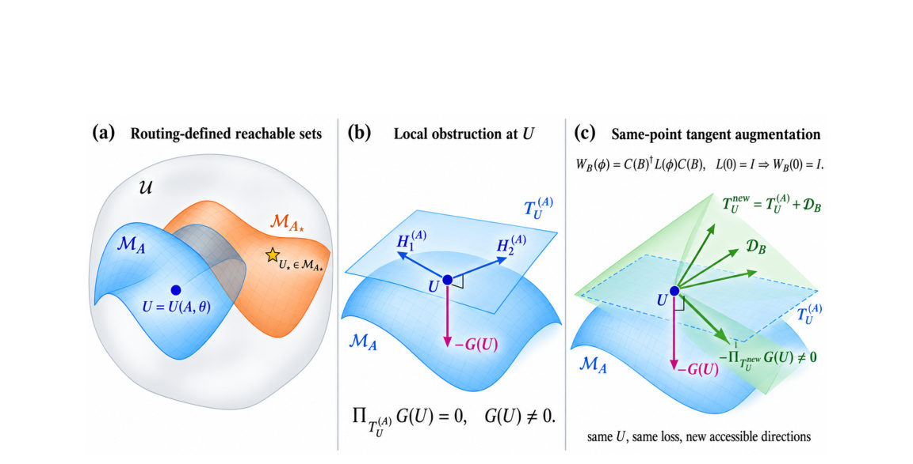
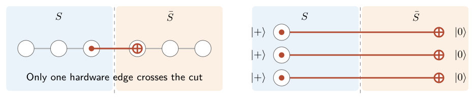
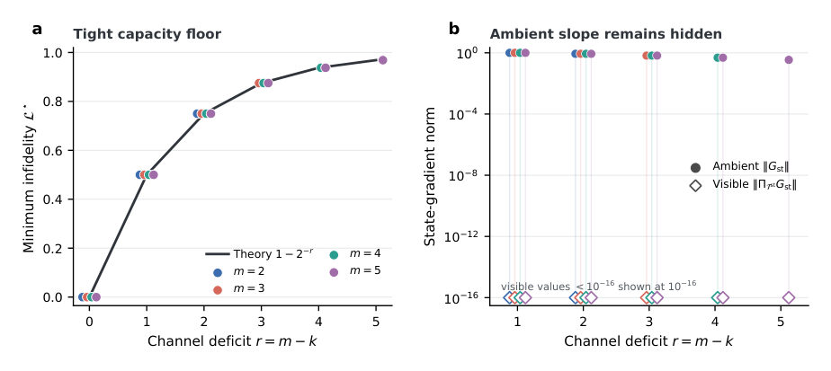
Summary. This work analyzes the geometric constraints on variational quantum circuits, showing that simply having enough parameters is insufficient for effective training. By focusing on the discrete routing structure of CNOT gates, the authors quantify how this geometry limits local optimization directions, proposing a method to actively guide the circuit's structure during training to ensure convergence.
Why it may be interesting. It provides a deep geometric understanding of the limitations of variational quantum algorithms, suggesting that structural modifications (routing) can be used to guide optimization away from local minima or plateaus.
Main problem. The study investigates whether training variational quantum circuits requires more than just sufficient representational capacity; the training process must also have access to directions that improve the objective function.
Main result. The paper establishes a concrete link between representational capacity, local accessibility, and the ability to repair training stagnation by analyzing the role of discrete CNOT routing geometry.
Method. The authors use mathematical tools like operator Schmidt rank, finite-field formulas, and tangent space analysis to characterize the geometry of the reachable unitary set defined by the circuit's routing structure.
Model / system. The model is a variational quantum circuit built from CNOT gates and arbitrary one-qubit gates, parameterized by a mixed encoding involving discrete routing matrices (from GL(n, F2)) and continuous rotations.
Key observables. Operator Schmidt Rank (OSRS), local gradient coverage (tangent space projection $\Pi_{T_A}$), and the ability to restore descent directions.
Important parameters / regimes. The size of the system ($n$), the number of layers ($t$), and the specific structure of the CNOT routing matrix $A$.
Assumptions / limitations. The local results do not establish efficient global search, asymptotic barren-plateau suppression, or noisy-hardware advantage.
Figures summary. Figure 1 illustrates the mechanism: tracing reachable sets, showing ambient descent directions orthogonal to the accessible space, and demonstrating how identity-initialized routing blocks can restore descent.
Paper structure. The paper first analyzes the global constraints using OSRS and cut-rank formulas for single and multiple CNOT blocks. It then moves to local analysis, demonstrating gradient vanishing when the accessible tangent space is orthogonal to the objective gradient. Finally, it proposes and tests a 'same-point augmentation' technique to guide the opening of new descent directions.
Finding useful variational quantum circuits requires more than representational capacity: training must also have access to directions that improve the objective. We study how discrete CNOT routing shapes both capacity and local accessibility. For circuits built from CNOT and arbitrary one-qubit gates, we separate binary routing matrices from continuous rotations to relate global capacity to local tangent accessibility. An exact finite-field formula for the operator Schmidt rank of a CNOT block and cumulative multiblock bounds yield capacity constraints and a Bell-pair fidelity obstruction. Locally, routing propagates generators into a routing-dependent tangent space, so all parameter gradients can vanish even when the ambient objective gradient is nonzero; frame bounds distinguish loss of gradient coverage from poor conditioning. A routing-conditioned identity insertion preserves the current unitary, state, loss, and existing gradients while adding new tangent directions. Candidate-only and incremental projection scores provide local criteria for ranking insertions. Exact-statevector tests show strong short-horizon score-descent correlations on controlled Bell tasks and effective equal-cost selection on connected Heisenberg chains up to twelve qubits, with complementary TFIM selector controls. A broader TFIM routing ensemble exhibits routing-dependent near-stagnation. Together, these results connect representational capacity, local accessibility, and same-point repair through a common discrete routing description. An architecture need not remain fixed during training: task-dependent geometric information can guide the opening of new descent directions while preserving the learned circuit at insertion. This provides a concrete local approach to a broader problem: how useful quantum circuits can be discovered from the information a task supplies.
Authors: Quentin Pitteloud, Jacopo Masotti, Luca Frediani
Type: theory · Category: other · PDF: https://arxiv.org/pdf/2610.07512v1
Analysis basis: full PDF text, analyzed in chunks
Summary. This paper presents an advanced numerical technique to approximate the Dirac coupling operator within a multiwavelet basis. By adapting the proven X2C method, the authors enable the block-diagonalization of the Dirac Hamiltonian for bound state problems. This provides a powerful, adaptable tool for calculating relativistic quantum properties in molecular and atomic systems.
Why it may be interesting. This work directly addresses the computational challenges of solving relativistic quantum mechanics (Dirac equation) in complex, non-uniform basis sets, which is highly relevant for molecular and atomic structure calculations in AMO physics.
Main problem. The paper develops a method to accurately approximate the Dirac coupling operator in a multiwavelet basis, adapting the established X2C technique.
Main result. The method successfully extends the energy-independent block-diagonalization of the Dirac Hamiltonian to the adaptable multiwavelet basis, allowing for robust calculations in bound state quantum mechanics.
Method. It approximates the coupling operator using a projector constructed from atomic eigenstates, which are then represented in the multiwavelet basis via Gaussian projections.
Model / system. The system involves Dirac spinors describing bound states, governed by the Dirac Hamiltonian. The core challenge is handling the coupling operator $\hat{X}$ that links the large and small components of the spinor.
Key observables. The coupling operator $\hat{X}$, the effective Hamiltonian $\hat{H}_{ASC}$, and the energy eigenvalues $E$.
Important parameters / regimes. The mass term $mc^2$, the potential $\hat{V}$, and the basis set parameters related to the multiwavelet decomposition.
Assumptions / limitations. The method assumes that the full system's basis can be approximated by a direct sum of constituent atomic bases, and it relies on projecting Gaussian-type atomic orbitals onto the multiwavelet basis.
Paper structure. The paper first establishes the theoretical framework for the X2C method in fixed bases, then details the adaptation of this technique to the multiwavelet basis by projecting Gaussian functions, and finally applies this to solve the eigenvalue problem for the Dirac Hamiltonian.
We present a method to obtain the proven exact 2-component (X2C) method, normally applied to Gaussian-type fixed Hilbert bases, in an adaptative non-uniform grid basis of the Hilbert space, namely Multiwavelets. The X2C method manages to block-diagonalise the Dirac Hamiltonian restricted to the subspace of the basis, in an energy-independent manner. The method takes inspiration from the success of the atomic mean-field X2C method on the Gaussian bases to represent the coupling operator as a projector onto the small components of the eigenstates of the constituent atoms of the system.
Papers from cond-mat.mtrl-sci, mes-hall, other, soft, supr-con. These archives are de-prioritized — they appear at the end regardless of relevance score.
Authors: Seunghyun Park, Daniel T. Larson, Zeyu Hao, Takashi Taniguchi, Kenji Watanabe, Efthimios Kaxiras, Yuan Cao, Amir Yacoby
Type: experiment · Category: strongly correlated electrons · PDF: https://arxiv.org/pdf/2610.07429v1
Analysis basis: full PDF text, analyzed in chunks
Topic relevance: 🔥 analog quantum simulation 4/5
Summary. This work introduces a novel, reconfigurable MEMS platform for studying moiré graphene, enabling continuous and precise control over the twist angle. By using Raman spectroscopy, the researchers map the moiré potential and observe how electronic and vibrational band structures evolve deterministically as the twist angle is tuned. This establishes a powerful, reproducible tool for investigating correlated and topological quantum phenomena in moiré materials.
Why it may be interesting. The ability to deterministically tune the Hamiltonian parameter ($ heta$) in a solid-state system using an engineered platform is highly valuable for studying emergent quantum phases relevant to AMO physics and many-body dynamics.
Main problem. The primary challenge is achieving precise and reproducible control over the twist angle in moiré graphene systems to systematically map the full phase diagram of correlated and topological phenomena.
Main result. The authors developed a reconfigurable MEMS platform that allows continuous, deterministic tuning of the twist angle, providing a reproducible Raman reference for twisted bilayer graphene.
Method. The study uses Raman spectroscopy measurements performed on a custom MEMS-based platform that mechanically rotates and assembles two graphene layers in situ.
Model / system. The physical system is twisted van der Waals (vdW) graphene, forming a moiré superlattice. The platform allows mechanical control of the twist angle ($ heta$) between two independently fabricated layers.
Key observables. Raman spectra (G-mode and 2D-mode), LO phonon dispersion (mapped via R-mode), and the evolution of the 2D mode line shape.
Important parameters / regimes. Twist angle ($ heta$), moiré momentum ($q_{ ext{moiré}}$), and the resonant excitation energy ($E_L$).
Assumptions / limitations. The analysis assumes a linear band dispersion of the Dirac cone at large twist angles, and the R-mode visibility relies on momentum matching conditions.
Figures summary. Figures illustrate the MEMS operation schematics, Raman spectra showing R-peak dispersion with angle, and the evolution of the 2D mode and G-mode signatures as hybridization occurs.
Paper structure. The paper introduces the MEMS platform, details the use of Raman spectroscopy to map the moiré potential via LO phonon dispersion, and analyzes the angle-dependent evolution of electronic (2D mode) and vibrational (G-mode) signatures.
Twisted van der Waals (vdW) systems provide a powerful platform for exploring emergent correlated phenomena, including superconductivity, magnetism, and topological phases. The twist angle offers a continuous tuning parameter for modifying the underlying Hamiltonian, however, precise and reproducible control remains challenging. Existing approaches are limited by single-use device architectures, restricted angular precision, or vertical probing geometries. Here we introduce a reconfigurable graphene-based moiré platform in which two independently fabricated layers are mechanically assembled and rotated in situ using a micro-electromechanical system (MEMS). Raman spectroscopy confirms the formation and robustness of the twist-induced moiré potential and enables continuous, deterministic control of the twist angle. The moiré potential folds the electronic band structure and activates the longitudinal optical (LO) phonon mode, allowing us to map its dispersion and directly visualize the moiré momentum. Angle-dependent electronic band hybridization is resolved through the evolution of the double-resonant 2D mode. Near \(0^\circ\), an emergent asymmetry of the \(Γ\)-point G-mode phonon reveals phonon band folding and hybridization driven by the moiré superlattice potential and interlayer relaxation. Our platform provides a reproducible Raman reference for twisted bilayer graphene while eliminating device-to-device variability. More broadly, it establishes the twist angle as a deterministically controllable parameter for systematic studies of correlated and topological phenomena in moiré quantum materials.
Authors: Daniel Groll, Daniel Wigger, Tilmann Kuhn
Type: theory · Category: other · PDF: https://arxiv.org/pdf/2610.07316v1
Analysis basis: full PDF text, analyzed in chunks
Topic relevance: Keldysh / 2PI / non-Gaussian methods 3/5 · interference shaping light 3/5 · correlated / nonlocal dissipation 2/5 · driven-dissipative phase transition 2/5 · methods for driven-dissipative 2/5 · analog quantum simulation 1/5 · non-equilibrium universality 1/5 · quantum measurements 1/5
Summary. This theoretical paper models resonance Raman scattering in TMD monolayers, focusing on the role of inter-valley phonon scattering and strain. Using a microscopic Hamiltonian approach, the authors predict that inter-valley scattering induces destructive interference between different Raman orders. This results in a quantifiable suppression of the incoming resonance, matching recent experimental observations.
Why it may be interesting. This work directly addresses open quantum systems dynamics by modeling exciton-phonon coupling and spectral line shape modification due to coupling to lattice vibrations, which is a core topic in quantum optics and open quantum systems.
Main problem. The study investigates how inter-valley phonon scattering and strain affect the resonance Raman scattering profiles in monolayer Transition Metal Dichalcogenides (TMDs).
Main result. Inter-valley scattering causes destructive interference between first and third-order Raman processes, leading to a measurable suppression of the incoming resonance in WSe2.
Method. The analysis employs a microscopic model using an effective deformation potential coupling for the exciton-phonon interaction, calculated via diagrammatic approaches and Green's functions.
Model / system. The system is monolayer TMDs (like WSe2) exhibiting strong exciton-phonon coupling. The model uses a Hamiltonian encompassing free exciton, free phonon, and exciton-phonon coupling terms.
Key observables. Resonance Raman profile, scattering spectrum S(Omega), and the exciton self-energy $\Sigma_\alpha(E, K)$.
Important parameters / regimes. Strain (modeled as an energy shift) and the relative strength of $A_1$-phonon emission between K- and Q-valleys.
Assumptions / limitations. The calculation is performed in the linear response regime, and approximations like the rotating wave approximation are used for the correlation function derivation.
Figures summary. Figures 10 and 11 illustrate the impact of strain and inter-valley scattering on the resonance Raman profiles for MoSe2 and WS2, respectively.
Paper structure. The paper builds the theory by defining the Hamiltonian and deriving the scattering spectrum using Green's functions, then calculates the self-energies self-consistently, culminating in the prediction of the suppressed resonance profile.
The optical properties of monolayer transition metal dichalcogenides (TMDCs) are strongly impacted by exciton-phonon coupling, especially inter-valley scattering in the case of tungsten-based materials. Together with strain-tunability of the energetic K-Q valley separation this material class therefore provides a platform for semiconductor optomechanics. Here we investigate the influence of inter-valley scattering and strain on resonance Raman scattering in monolayer TMDCs using a microscopic model based on an effective deformation potential coupling for the exciton-phonon interaction. Considering exemplarily the resonance Raman profile of the A$_1$-mode in hBN-encapsulated monolayer WSe$_2$, we find that inter-valley scattering between the electronic K- and Q-valley leads to destructive interference between a first order and a third order Raman process. As a result we obtain a suppression of the incoming resonance in WSe$_2$, consistent with recently published experimental data.
Authors: Suhas Suresh Bharadwaj
Type: both · Category: other · PDF: https://arxiv.org/pdf/2610.07203v1
Analysis basis: full PDF text, analyzed in chunks
Topic relevance: Keldysh / 2PI / non-Gaussian methods 3/5 · methods for driven-dissipative 3/5 · analog quantum simulation 1/5 · driven-dissipative phase transition 1/5 · non-equilibrium universality 1/5 · quantum measurements 1/5
Summary. This work addresses the challenge of observing quantum valley effects in real, macroscopic 2D-material transistors. By embedding quantum valley physics into a macroscopic drift-diffusion model, the authors demonstrate that the measurable signature of strain-induced valley sorting is overwhelmingly determined by the metal-semiconductor contacts, not the bulk channel. This identifies the contact interface as the critical engineering point for valley-selective transport.
Why it may be interesting. While focused on solid-state electronics, the methodology of bridging quantum Hamiltonian physics (valley deflection) into a continuum, macroscopic transport model is highly relevant for understanding open quantum systems where boundary conditions dictate global behavior.
Main problem. The core problem is determining if the quantum effect of strain-induced valley sorting, observed in isolated nanoscale fragments, survives and manifests macroscopically in a fully contacted 2D-material transistor.
Main result. The study concludes that the strain-induced valley physics is not a bulk channel property but is instead dominated by the metal-semiconductor source and drain contacts.
Method. The authors developed a novel framework by embedding the quantum valley-deflection tensor into a macroscopic Poisson-drift-diffusion model, bridging quantum and classical transport descriptions.
Model / system. The system is a monolayer MoS2 Field-Effect Transistor (FET) subjected to a localized pseudo-magnetic strain field. The physics is modeled using a two-band massive Dirac Hamiltonian and extended via a macroscopic transport model.
Key observables. Valley Topological Magnetoresistance (VTMR), measured as a percentage suppression of the ON-state current, and the derived valley-topological contact resistance ($R_{c,V}$).
Important parameters / regimes. Transistor length (300 nm), gate dielectric (3 nm HfO2), temperature (77 K), and localized strain field strength (6.14 T pseudo-magnetic field).
Assumptions / limitations. The analysis assumes the use of tunneling-transparent, degenerately-doped contacts to prevent classical Ohmic barriers from overwhelming the topological signal.
Figures summary. Not specified (The notes describe the results derived from simulations rather than describing figure content).
Paper structure. The paper progresses by first establishing the quantum Hamiltonian under strain, then developing a macroscopic transport model to incorporate this quantum effect into a full device structure, and finally applying this model to show that the measured signal originates entirely from the contacts.
Strain engineering is a leading route to control valley-selective transport in monolayer transition metal dichalcogenides. Whether this quantum effect survives inside a fully contacted device remains an open question. Quantum transport models capture the underlying valley deflection but are limited to isolated nanoscale fragments, leaving it unclear if a full device registers strain-induced valley sorting in the bulk, at the contacts, or at all. Here, the quantum valley-deflection tensor of strained monolayer MoS$_2$ is embedded directly into a macroscopic Poisson-drift-diffusion model, extending this physics to a complete, contact-inclusive device. Applying this framework to a 300~nm monolayer MoS$_2$ transistor with a 3~nm HfO$_2$ gate dielectric at 77~K, under a localized 6.14~T pseudo-magnetic strain field, shows the resulting 63.6\% suppression of the ON-state current is not a bulk property. It is set almost entirely by the source and drain metal-semiconductor interfaces. The full suppression is reproduced when only the 15~nm contact regions are strained and nearly vanishes when the channel interior alone is strained, identifying the metal contact as the dominant site of strain-induced valley physics. Observing it requires tunneling-transparent, degenerately-doped contacts, since classical Ohmic barriers overwhelm the topological signal. A transmission-line analysis reduces this behavior to a single valley-topological contact resistance ($R_{c,V}$) and a predictive inverse-length scaling law. This framework applies to any strain-engineered 2D-material heterostructure and can be tested with standard multi-length contact structures. Ultimately, these results identify the metal-semiconductor interface as the decisive location for engineering and detecting valley-selective transport in real 2D-material devices.
Authors: Stefan Reissl, Simon C. O. Glover, Ralf S. Klessen, Liam S. Morrissey, Mordecai-Mark Mac Low
Type: theory · Category: numerical methods · PDF: https://arxiv.org/pdf/2610.07178v1
Analysis basis: full PDF text, analyzed in chunks
Topic relevance: methods for driven-dissipative 3/5
Summary. This work models H2 formation on interstellar dust grains, critically incorporating the effect of systematic gas-dust drift into the chemical kinetics. Using a KMC simulation, the authors show that while increased collision rates might suggest higher formation, the energy dependence of sticking drastically suppresses the overall efficiency. This mandates that models for dynamic astrophysical environments must account for both relative gas-dust velocity and its impact on surface sticking.
Why it may be interesting. While focused on astrochemistry, the use of detailed KMC simulations to model surface reactions under non-equilibrium conditions (drift) provides a sophisticated example of applying advanced numerical techniques to complex, multi-scale physical processes.
Main problem. The paper investigates how systematic gas-dust drift modifies the efficiency of molecular hydrogen (H2) formation on interstellar dust grains.
Main result. Strong gas-dust drift suppresses H2 formation when sticking probability depends on impact energy, suggesting that simple collision rate enhancements are insufficient for accurate models of dynamic environments.
Method. The authors employ an event-driven Kinetic Monte Carlo (KMC) model to simulate individual H atoms interacting with spherical dust grains.
Model / system. The system is the interstellar medium, modeling H2 formation on silicate and carbonaceous dust grains. The model incorporates adsorption, surface migration, thermal desorption, and both Langmuir-Hinshelwood (LH) and Eley-Rideal (ER) reaction channels.
Key observables. H2 formation efficiency (epsilon_H2), anisotropic distribution of adsorbed H and H2 on the grain surface.
Important parameters / regimes. Gas-dust drift velocity (characterized by a shifted Maxwellian distribution), sticking probability (constant vs. energy-dependent), and dust temperature.
Assumptions / limitations. The model compares constant sticking assumptions against energy-dependent sticking, which is crucial for determining the correct physical regime.
Figures summary. Figure 1 illustrates the dependence of collision rate and sticking rate on dust temperature for various drift parameters, showing the mathematical framework for drift incorporation.
Paper structure. The paper develops the KMC framework to include drift via shifted Maxwellian sampling, compares results using constant vs. energy-dependent sticking, analyzes the dominance of ER over LH reactions under drift, and concludes with necessary revisions for modeling dynamic environments.
Molecular hydrogen is predominantly formed on dust-grain surfaces in the interstellar medium, where relative gas-dust motion can arise in dynamically active environments. While the dependence of H$_2$ formation on grain temperature and surface properties is well studied, the impact of gas-dust drift has received little attention. We investigate how gas-dust drift modifies H$_2$ formation, focusing on the competition between the drift-enhanced H-atom collision rate and reduced sticking at higher impact energies. We use an event-driven kinetic Monte Carlo model that follows individual H atoms on spherical silicate and carbonaceous grains, including adsorption, surface migration, thermal desorption, and Langmuir-Hinshelwood (LH) and Eley-Rideal (ER) reactions. Drift is described by a shifted Maxwellian velocity distribution, and we compare constant and impact-energy-dependent sticking probabilities. Drift produces increasingly anisotropic distributions of adsorbed H and H$_2$ formation across the grain surface. Assuming constant sticking, increasing drift enhances H$_2$ formation through the higher collision rate, with efficiencies up to $ε=0.3-0.4$. With energy-dependent sticking, strong drift instead suppresses formation on both materials, reducing efficiencies to $ε=0.01-0.03$. Carbonaceous grains remain efficient to higher dust temperatures than silicate grains. ER reactions dominate over most of the investigated parameter space and become increasingly important at strong drift as the reduced surface population suppresses LH reactions. Thus, enhanced collision rates under gas-dust drift do not necessarily increase H$_2$ formation. Models of dynamically active environments should account for both relative gas-dust velocities and their effects on sticking.
Authors: Suhas Suresh Bharadwaj
Type: theory · Category: numerical methods · PDF: https://arxiv.org/pdf/2610.07179v1
Analysis basis: full PDF text, analyzed in chunks
Topic relevance: Keldysh / 2PI / non-Gaussian methods 2/5 · methods for driven-dissipative 2/5 · quantum measurements 2/5
Summary. This work develops a sophisticated, multiscale adjoint-state framework to test if theoretically predicted strain-tunable valley splitting in 2D magnetic heterostructures is actually measurable in a real device. By treating the coupling constant as an unknown parameter in an inverse problem, the authors provide a precise diagnostic threshold rather than a definitive material claim. This methodology offers a vital mathematical filter for advancing 2D materials research.
Why it may be interesting. The rigorous application of adjoint-state methods to bridge quantum material predictions (DFT) to measurable transport quantities (Hall effect) is a powerful, generalizable computational technique for assessing experimental feasibility in condensed matter systems.
Main problem. The paper addresses the challenge of determining the device-level identifiability of theoretically predicted strain-tunable valley splitting in 2D magnetic heterostructures.
Main result. The authors established a rigorous adjoint-state framework that provides a quantitative, statistically robust diagnostic threshold (an operational window) to assess the experimental viability of predicted quantum effects.
Method. A multiscale inverse framework was developed, combining first-principles calculations, continuum elastodynamics, and a partial differential equation-constrained adjoint-state method to map microscopic parameters to macroscopic transport observables.
Model / system. The system is a $ ext{MoS}_2/ ext{CrBr}_3$ 2D magnetic heterostructure. The model incorporates a valley Hamiltonian, piezoelectric coupling ($\eta$), and is solved using a combination of DFT, continuum mechanics, and drift-diffusion transport equations.
Key observables. The transverse Hall potential difference ($V_H(x)$) and the derived safe operating window ($262.0$ to $22,337.6 ext{ V/cm}$).
Important parameters / regimes. The exchange-strain coupling constant ($\eta$), which was found to be statistically consistent with zero based on initial DFT estimates.
Assumptions / limitations. The analysis assumes the system relaxes into a chiral $ ext{C}_3$ symmetry, and the macroscopic simulation uses an isothermal approximation, neglecting Joule heating.
Figures summary. The notes detail the use of finite-difference solvers for both the forward and adjoint state systems, validating the gradient calculation against finite-difference references.
Paper structure. The paper progresses from establishing the physical necessity of the framework (bridging quantum theory to macroscopic measurement) to developing the adjoint-state PDE constraint, applying it to the specific $ ext{MoS}_2/ ext{CrBr}_3$ system, and finally deriving a quantitative diagnostic threshold.
Controlling valley degrees of freedom with mechanical strain is a promising approach for solid-state information processing. Current theoretical literature routinely predicts strain-tuned valley splitting at the microscopic level but rarely evaluates whether these quantum predictions remain statistically recoverable in realistic macroscopic devices. This manuscript establishes a fully classical, partial differential equation-constrained multiscale inverse framework for quantifying the device-level identifiability of predicted strain-tunable valley effects in two-dimensional magnetic heterostructures, demonstrated here for a molybdenum disulfide and chromium tribromide heterostructure. First-principles structural relaxations confirm a chiral $C_3$ point-group symmetry which mathematically reduces the relevant exchange-strain coupling tensor to a single scalar. A partial differential equation-constrained adjoint-state architecture successfully bridges continuum elastodynamics to valley-resolved anomalous Hall transport. Density functional theory yields a coupling estimate of $η\approx -0.07$ meV whose 95% confidence interval is consistent with zero. Evaluating this specific coupling magnitude against established thermal noise and velocity saturation limits defines a safe operating window bounded between 262.0 and 22,337.6 V/cm. Rather than asserting a confirmed nonzero material property this bounded operational window functions as a precise diagnostic threshold. Deploying this rigorous statistical identifiability framework provides a necessary mathematical filter to determine the true experimental viability of theoretically predicted two-dimensional materials before complex physical fabrication.
Authors: Susanne Wagner, Gerhard Kahl, Carina Karner
Type: theory · Category: statistical mechanics · PDF: https://arxiv.org/pdf/2610.08522v1
Analysis basis: full PDF text, analyzed in chunks
Topic relevance: analog quantum simulation 2/5 · methods for driven-dissipative 2/5 · driven-dissipative phase transition 1/5 · non-equilibrium universality 1/5
Summary. This paper uses colloidal ellipses with directional patches to study self-assembly, demonstrating that particle shape and interaction anisotropy control the formation of porous networks. By developing a particle-patch graph and using graph theory, the authors quantify the transition from ordered kagome lattices to disordered porous states. This work provides a detailed, quantitative framework for linking microscopic bonding rules to macroscopic network topology.
Why it may be interesting. While focused on classical colloids, the rigorous application of statistical mechanics principles to characterize phase transitions, order parameters, and structural pathways in anisotropic systems provides a strong methodological framework applicable to complex quantum many-body systems.
Main problem. The study investigates how shape and interaction anisotropy dictate the self-assembly pathways and resulting porous structures of colloidal particles.
Main result. The system exhibits tunable crystalline kagome order, and the nucleation into this ordered phase follows a one-step pathway, contrasting with spherical systems.
Method. The research employs Monte Carlo simulations combined with advanced graph theory techniques to map microscopic bonding motifs to mesoscopic pore network properties.
Model / system. The model uses colloidal particles shaped as triblock ellipses, decorated with two attractive patches at opposite poles, allowing for both shape and interaction anisotropy.
Key observables. Kagome lattice order parameter ($\Gamma_6$), loop size distribution, bonding motif concentrations, and the particle-patch graph structure.
Important parameters / regimes. Temperature ($T$), chemical potential ($\mu$), and the particle aspect ratio ($\kappa=2$).
Assumptions / limitations. The analysis relies on the particle-patch graph to correctly distinguish bonds formed at different patches, and loop detection uses a face-walking algorithm.
Figures summary. Figures illustrate the geometry of the kagome lattice unit cell, the comparison between particle and patch graphs, and cross-sections showing the distribution of bonding motifs and loop sizes across different thermodynamic regimes.
Paper structure. The paper progresses from defining the physical system and the necessary graph representation (particle-patch graph) to detailing the simulation methods (MC moves, plateau detection) and finally applying these tools to characterize structural transitions, motif formation, and pore network topology.
In colloids, anisotropy in either shape or particle interactions can steer assemblies away from close-packed monolayers and towards more intricate structures. In this study we utilize both shape and interaction anisotropy to stabilize porous surface assemblies of triblock elliptical particles, whose surfaces are decorated with two attractive patches at opposite poles. The resulting structures display a tunable degree of crystalline kagome order, controlled by quenching the temperature and/or changing the chemical potential. In particular, we find evidence that nucleation into the kagome lattice proceeds via a one-step pathway, in contrast to the two-step route widely reported in spherical triblock systems, making triblock ellipses an interesting model system for studying how self-assembly pathways change with particle shape. Beyond ordered crystalline structures, we find disordered porous networks with complex internal geometry. To characterize this range of assemblies, we introduce a particle-patch graph that explicitly captures the localization of bonds at distinct patches. Bonding motifs follow directly from this representation, while the loops, that we identify as the pore boundaries, can be determined from the graph's planar embedding. We detect all loops as the face boundaries in the planar embedding by means of a face-walking algorithm, distinct from shortest-path approaches used in ring detection. Together with a new local and global order parameter measuring the loop network's regularity with respect to a selected loop size, this framework connects microscopic bonding motifs to mesoscopic pore properties and quantifies the tunable order of these porous assemblies.
← Index · ← Previous · Next →